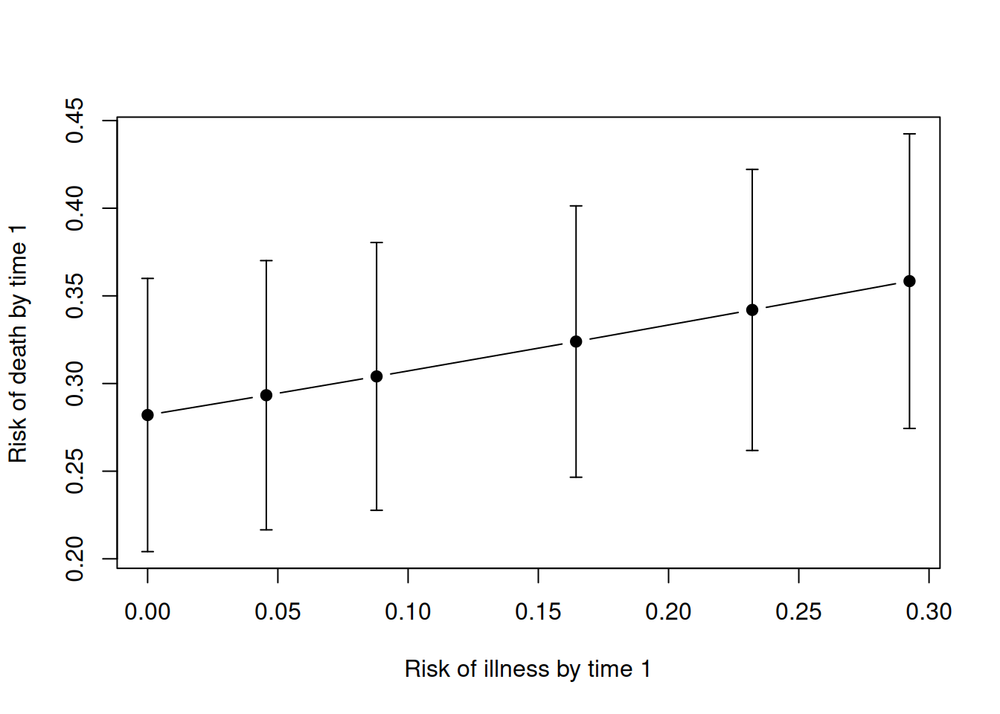

MultiStateTMLE estimates causal parameters of multistate event processes under stochastic intensity interventions: hypothetical interventions that scale the intensity of one event process (for example, an illness) by a factor alpha, and ask how the risk of another process (for example, death) would change. Estimation uses targeted maximum likelihood estimation (TMLE), which updates an initial fit of the hazards so that the resulting estimator is efficient and comes with influence curve based standard errors.
This vignette walks through the main workflow:
- Fit the initial hazard models with
fit_initial(). - Target a single intervention with
tmle_alpha(). - Trace how the outcome risk depends on the exposure risk with
calibration_curve(). - Calibrate the intervention to a target exposure risk with
calibrate_alpha(). - Decompose a treatment effect with
calibrated_contrasts().
The data
The package ships with illness_death, simulated event history data for 150 individuals at risk of an illness z, which can occur at most once, and of death. The illness raises the hazard of death, and both hazards depend on a baseline covariate L0. Follow-up is subject to censoring.
head(illness_death)
#> id time delta L0
#> 1 1 1.0836890 1 0.2724785
#> 2 2 0.6539194 1 0.3572619
#> 3 3 0.1212156 1 -0.8616620
#> 4 4 1.1416233 2 0.8083350
#> 5 4 3.6778032 1 0.8083350
#> 6 5 1.0962284 2 0.6127352The data are in long format with one row per event and the columns:
-
id: individual identifier. -
time: event time. -
delta: the integer code of the process that jumped, with0reserved for censoring. Here1is death and2is illness. - Baseline covariates, here
L0.
An individual who dies without falling ill has a single row, while one who falls ill and later dies has two rows. For example, individual 3 dies, while individual 4 falls ill and then dies:
Step 1: Fit the initial hazard models
fit_initial() fits one hazard model per event process, expands the data to the grid of observed event times up to the horizon tau, and builds the discrete state space that the targeting step works on.
Each process is specified in fit_types by its code in the delta column and a one-sided formula of the covariates of its hazard. Other processes can be used as covariates by name, here the death hazard depends on whether the individual has fallen ill (z). Because the illness can occur at most once, we say that individuals are only at risk of z while z == 0. Exactly one process must be the censoring process (delta = 0).
fit_types <- list(
z = list(
delta = 2,
model = ~L0,
at_risk = function(dt) dt[["z"]] == 0
),
death = list(delta = 1, model = ~ L0 + z),
censoring = list(delta = 0, model = ~L0)
)
fit <- fit_initial(illness_death, fit_types = fit_types, tau = 1)
fit$process_types
#> $z
#> [1] "one_jump"
#>
#> $death
#> [1] "terminal"
#>
#> $censoring
#> [1] "terminal"By default the hazards are fitted with Cox models. Setting fit = "hal" in a process’s entry uses the highly adaptive lasso instead (experimental).
Step 2: Target a single intervention
tmle_alpha() estimates the risk of the target process by time tau under the intervention that multiplies the intensity of z_name by alpha. With alpha = 1 there is no intervention, so this is the observed risk of death by time 1:
observed <- tmle_alpha(fit, target = "death", alpha = 1, z_name = "z")
observed$estimate
#> tmle_est se g_est
#> 0.32504691 0.03906316 0.32504691The estimate contains the targeted estimate tmle_est, its standard error se, and the initial plug-in estimate g_est. Halving the intensity of the illness gives:
halved <- tmle_alpha(fit, target = "death", alpha = 0.5, z_name = "z")
halved$estimate
#> tmle_est se g_est
#> 0.30405495 0.03853505 0.31239982A 95% confidence interval follows from the standard error:
Setting alpha = 0 removes the illness altogether, while alpha > 1 increases its intensity.
Step 3: Trace the calibration curve
An intensity scaling alpha is not always easy to interpret. It is often more natural to ask what happens to the outcome when the risk of the exposure is changed by a given amount. calibration_curve() evaluates a grid of interventions and, for each, estimates both the risk of the exposure z and the risk of the target:
curve <- calibration_curve(
fit,
target = "death",
z_name = "z",
alpha_grid = c(0, 0.25, 0.5, 1, 1.5, 2)
)
curve$estimate
#> alpha exposure_est exposure_se target_est target_se
#> <num> <num> <num> <num> <num>
#> 1: 0.00 0.00000000 0.000000000 0.2820265 0.03975707
#> 2: 0.25 0.04556128 0.009650541 0.2933270 0.03917784
#> 3: 0.50 0.08791201 0.017915870 0.3040549 0.03896630
#> 4: 1.00 0.16448600 0.031315003 0.3239449 0.03949105
#> 5: 1.50 0.23212809 0.041662682 0.3419800 0.04090885
#> 6: 2.00 0.29250854 0.049801208 0.3584115 0.04287637Plotting the target risk against the exposure risk traces out the calibration curve:
ce <- curve$estimate
lower <- ce$target_est - qnorm(0.975) * ce$target_se
upper <- ce$target_est + qnorm(0.975) * ce$target_se
plot(
ce$exposure_est,
ce$target_est,
type = "b",
pch = 19,
ylim = range(lower, upper),
xlab = "Risk of illness by time 1",
ylab = "Risk of death by time 1"
)
arrows(ce$exposure_est, lower, ce$exposure_est, upper,
angle = 90, code = 3, length = 0.04
)
Step 4: Calibrate the intervention
calibrate_alpha() solves for the alpha that achieves a given exposure risk and estimates the target risk under that intervention. The calibration target is given by exactly one of:
-
theta: the risk ofz_nameitself. -
rho: a fraction of the observed risk ofz_name. -
delta: an absolute difference from the observed risk ofz_name. -
rho_1a: a fraction of the risk ofz_nameunder the opposite baseline treatment (see the next section).
For example, the risk of death if the risk of illness were reduced to 80% of its observed value:
cal <- calibrate_alpha(fit, target = "death", z_name = "z", rho = 0.8)
cal$estimate
#> alpha_est alpha_se target_est target_se target_se_crude
#> 0.79272380 0.00995552 0.31992034 0.03864198 0.03866085
#> theta theta_se
#> 0.12713026 0.02505712Here alpha_est is the calibrated intervention, theta is the exposure risk it achieves, and target_est is the risk of death under it. The standard error target_se accounts for alpha being estimated, whereas target_se_crude treats it as known.
Step 5: Decompose a treatment effect
With a baseline treatment A0, the total effect of treatment on the outcome can be split into the part that goes through its effect on the exposure and the remainder. The calibrated intervention sets the treated individuals’ exposure risk to what it would have been under placebo, and calibrated_contrasts() then decomposes the total effect into:
- a mediated contrast: treatment versus the calibrated intervention, and
- a calibrated contrast: the calibrated intervention versus placebo.
illness_death has no treatment, so for illustration we add a randomised treatment that has no actual effect. The treatment model is given in treatment_model, and a lists the treatment values to prepare estimates for.
set.seed(1)
treated <- illness_death
a0 <- rbinom(max(treated$id), 1, 0.5)
treated$A0 <- a0[treated$id]
fit_treated <- fit_initial(
treated,
fit_types = list(
z = list(
delta = 2,
model = ~ L0 + A0,
at_risk = function(dt) dt[["z"]] == 0
),
death = list(delta = 1, model = ~ L0 + A0 + z),
censoring = list(delta = 0, model = ~L0)
),
tau = 1,
treatment_model = A0 ~ L0,
a = 0:1
)The contrasts are computed from the influence curves that each fit returns. In the calibrated arm we set a = 1 and rho_1a = 1, so the risk of illness under treatment is calibrated to equal the risk of illness under placebo:
treatment_fit <- tmle_alpha(
fit_treated,
target = "death",
alpha = 1,
a = 1
)
placebo_fit <- tmle_alpha(
fit_treated,
target = "death",
alpha = 1,
a = 0
)
calibrated_fit <- calibrate_alpha(
fit_treated,
target = "death",
z_name = "z",
rho_1a = 1,
a = 1
)
calibrated_contrasts(treatment_fit, placebo_fit, calibrated_fit)
#> target contrast estimate se lower upper
#> <char> <char> <num> <num> <num> <num>
#> 1: <NA> total -0.1405813 0.07724416 -0.29197704 0.01081449
#> 2: <NA> mediated -0.0234265 0.01632300 -0.05541899 0.00856599
#> 3: <NA> calibrated -0.1171548 0.08141345 -0.27672220 0.04241266The treatment was randomised without any effect, so the confidence intervals of all three contrasts cover zero, as expected.
Further reading
- The function reference documents further options, such as recurrent targets, expected time lost (
years_lost), and time-varying interventions (alpha_list). - To simulate multistate event history data, see the simevent package.